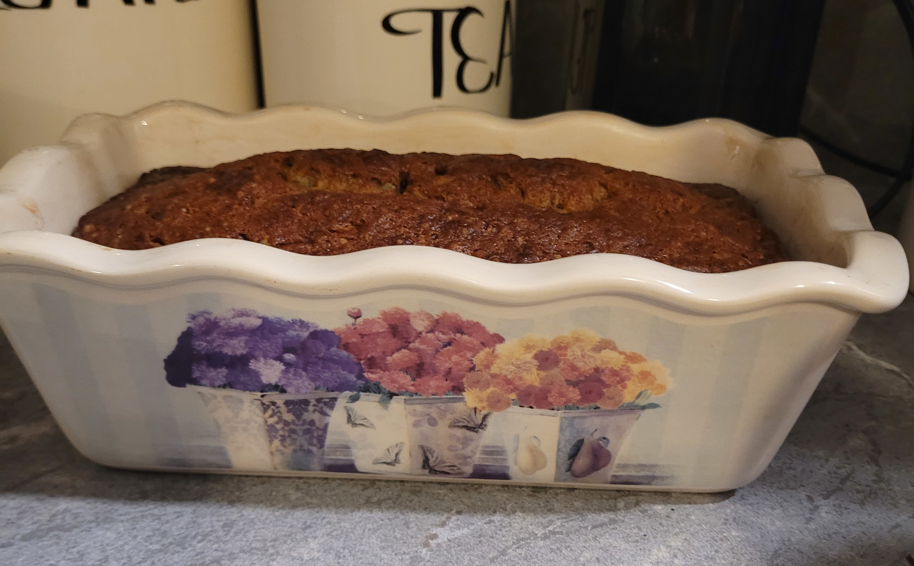

Banana bread is great, apple banana bread though... Just wow!
A classic staple... Quick to make, preheat the oven to 350 degrees and let's get started!
- 2 eggs
- 1/2 cup vegetable oil
- 1 cup mashed ripe bananas (about 2-3 bananas)
- 1 cup granulated sugar
- 1/2 cup brown sugar
- 1 tsp vanilla extract
- 2 cups all purpose or bread flour
- 1 tsp baking soda
- 1/2 tsp cinnamon
- 1/2 tsp salt
- 3 peeled & diced apples
- Step 1
- Step 2